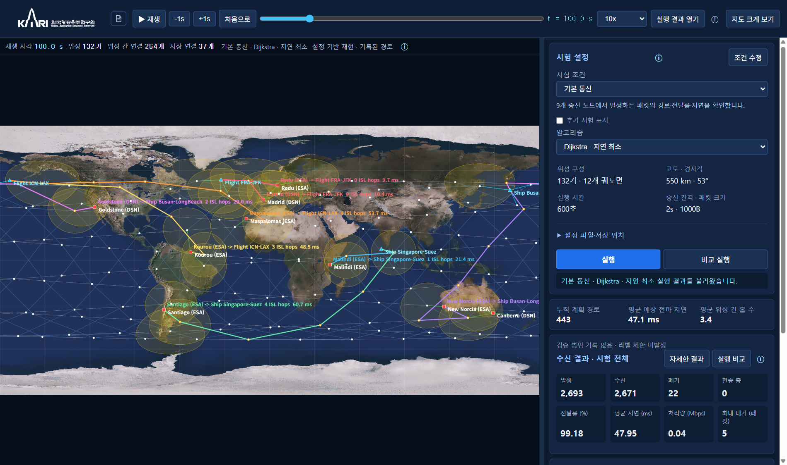
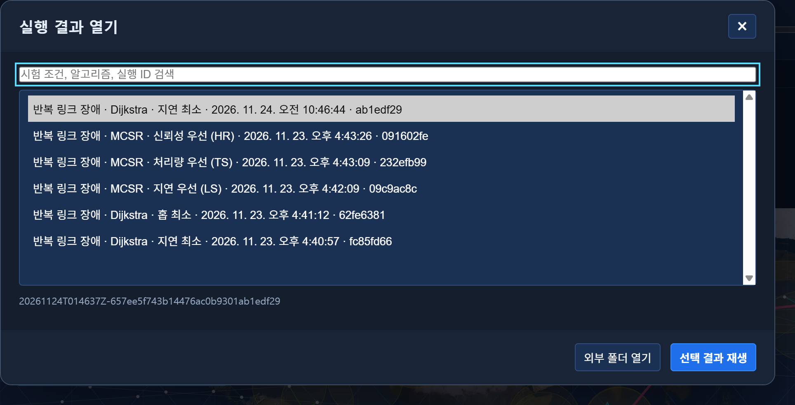
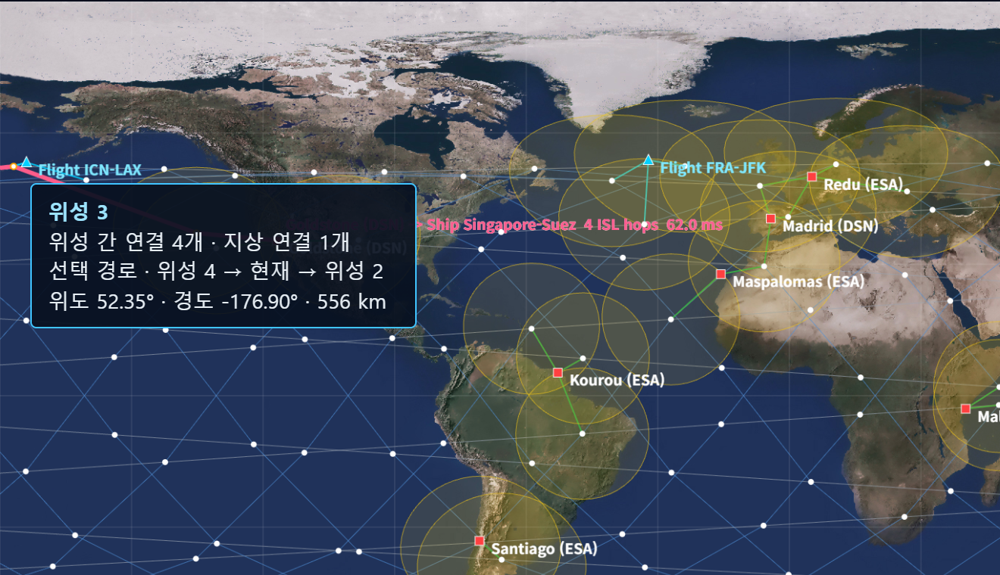
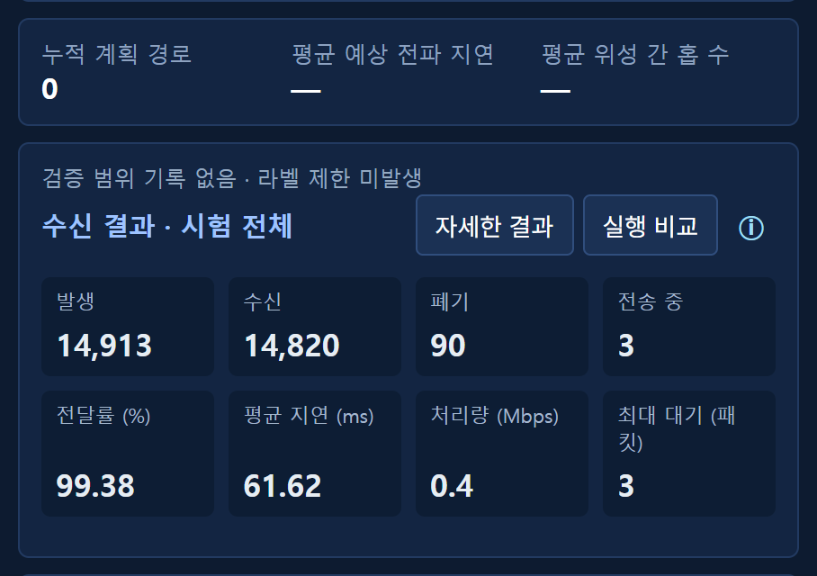
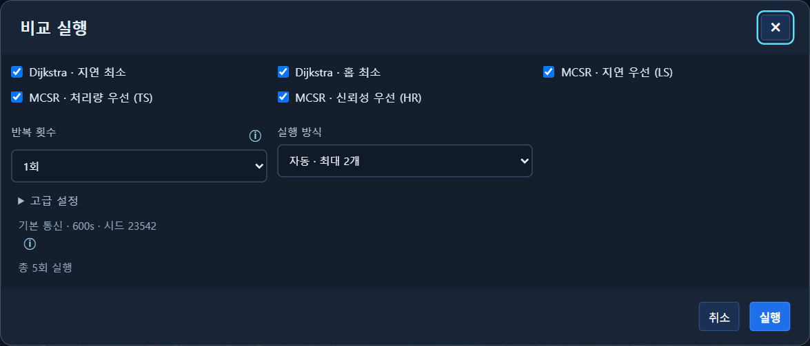
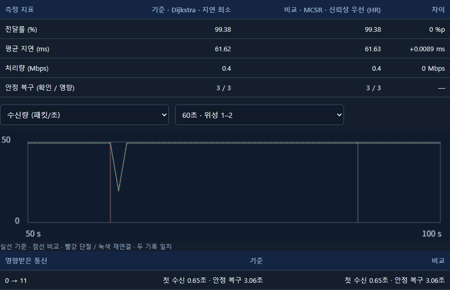
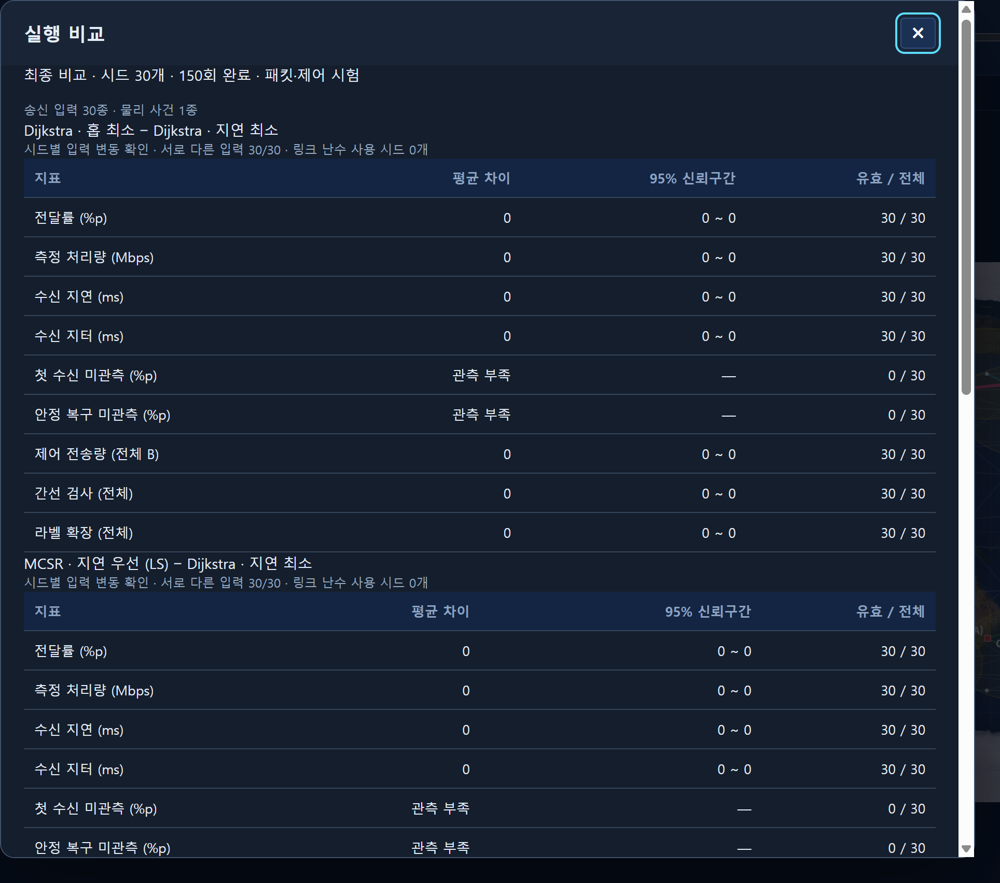

WINDOWS · 버전 1.0.0
LEO Network Simulator
사용자 설명서
저궤도 위성망에서 패킷 전달, 장애 복구 및 라우팅 알고리즘을 시험하는 방법을 안내합니다.
바로 시작하려면 설치와 첫 실행을 참고하세요. 프로그램 상단의 작은 문서 아이콘으로 이 설명서를 다시 열 수 있습니다.
파일로 보관하려면 상단의 PDF 저장을 누른 뒤 인쇄 창의 대상에서 PDF로 저장을 선택하세요.
사용자 설명서 · 01
프로그램과 화면 구성
시험 조건을 정하고 실행한 뒤, 지도와 수신 결과에서 같은 실행을 살펴봅니다.
| 화면 | 하는 일 |
|---|---|
| 상단 재생 도구 | 현재 결과의 재생·일시 정지, 시각 이동, 재생 속도 조절과 결과 불러오기 |
| 왼쪽 지도 | 위성 위치, 위성 간 연결(ISL), 지상 연결(GSL) 및 계획 경로 확인 |
| 오른쪽 시험 설정 | 시험 조건과 알고리즘을 선택하고 새 실행 또는 비교 실행 시작 |
| 오른쪽 수신 결과 | 전달률·수신 지연·처리량, 시간별 그래프와 실행 비교 확인 |

사용자 설명서 · 02
설치와 첫 실행
Windows x64 환경에서 배포 ZIP을 모두 풀고 sim-ui.exe를 실행합니다.
실행 전 준비
Windows 10 또는 11, Microsoft Edge WebView2 Runtime, Windows UI 호스트에 필요한 .NET Framework를 사용합니다. 설정과 기본 실행 결과는 EXE 폴더에 저장됩니다. 결과 저장 위치만 별도로 지정할 수 있습니다.
- ZIP 전체를 한 폴더에 풉니다. sim-ui.exe는 settings, engine, data와 같은 배포 폴더에서 실행합니다.
- 오른쪽 시험 설정에서 시험 조건을 ‘기본 통신 · 이동 노드 대상’으로, 알고리즘을 Dijkstra · 지연 최소로 선택합니다.
- 실행을 누르고 계산 완료를 확인합니다. 지도와 수신 결과가 새 실행으로 전환됩니다.
- 시간 슬라이더를 움직이거나 재생을 눌러 지도를 확인합니다. 다시 열 수 있도록 data/runs 안의 실행 ID 폴더를 보관합니다.
| 여는 파일 | 사용 범위 |
|---|---|
| sim-ui.exe | 조건 수정, 새 실행, 비교 실행, 결과 열기 및 지도 재생 |
| index.html | 직접 열면 저장된 결과를 재생합니다. 계산 및 INI 수정은 EXE에서 진행합니다. |
사용자 설명서 · 03
시험 조건과 알고리즘 선택
시험 조건은 위성망·송신·장애 등 입력을 정하고, 알고리즘은 그 안에서 경로를 고르는 방법을 정합니다.
기본 목록에는 대표 시험 8종(기본 통신·단일 구간·지상국 간·반복/무작위 링크 장애 및 대규모 3종)이 표시되며, 추가 시험 표시를 켜면 INI에 등록된 전체 시험 구성을 보여줍니다. 조건을 선택하면 목록 아래 설명과 설정 요약이 갱신됩니다. 실행을 누르면 선택한 조건으로 새 결과가 생성됩니다.
| 조건 | 기본 설정에서 확인하는 내용 |
|---|---|
| 기본 통신 · 이동 노드 대상 | 9개 송신 노드가 각각 2초 간격으로 이동 노드에 송신 |
| 고부하 통신 · 12번 노드 고정 (추가 시험) | 9개 송신 노드가 각각 0.001초 간격으로 12번 노드에 송신 |
| 반복 링크 장애 | 300초 동안 단일 흐름(20 ms 간격)의 기준 경로에서 60·120·180초마다 위성 간 링크 하나를 각각 30초 동안 끊어 우회와 수신 재개 확인 |
| 무작위 링크 장애 | 30~570초 사이에 무작위 링크 장애 20건을 각각 30초씩 적용해 전달률·지연 확인. 같은 입력과 장애 시드는 동일 장애 일정을 재현 |

사용자 설명서 · 04
알고리즘과 비교 목적
알고리즘을 고르면 선택한 INI 구성에 저장됩니다. 저장된 지도와 수신 결과는 새 실행이 끝날 때까지 그 실행의 데이터를 표시합니다.
| 화면 표시 | 경로 선택 기준 |
|---|---|
| Dijkstra · 지연 최소 | 전파 지연을 최소화하는 경로 |
| Dijkstra · 홉 최소 | 홉 수를 최소화하는 경로 |
| MCSR · 지연 우선 (LS) | 지연 우선 |
| MCSR · 처리량 우선 (TS) | 처리량 우선. 지연 상한을 지정할 수 있음 |
| MCSR · 신뢰성 우선 (HR) | 신뢰성 우선. 지터 제약을 지정할 수 있음 |
시험 목적별 선택
- 구성을 처음 확인할 때는 ‘기본 통신 · 이동 노드 대상’을 한 번 실행해 지도·송수신 상태를 확인합니다.
- 경로 복구를 비교할 때는 반복 링크 장애 또는 무작위 링크 장애를 선택하고 비교 실행을 사용합니다.
- 부하에 따른 차이를 살펴볼 때는 패킷 크기를 유지한 채 송신률이나 송신 노드 수를 단계적으로 바꿉니다. 같은 단계에서는 입력을 고정한 채 알고리즘을 비교합니다.
사용자 설명서 · 05
조건 수정과 기본값
조건 수정에서 변경한 값은 INI에 저장을 누르면 다음 실행에 적용됩니다.
시간 가정을 선택하면 DS·CSIB 설정이 화면에서 사라지며, INI에 저장하면 CSIB가 꺼집니다. DS·CSIB를 시험하려면 실제 패킷을 선택하세요.
- 시험 조건을 선택한 뒤 조건 수정을 누릅니다.
- 기본 설정과 송신 조건을 확인합니다. 링크·큐, MCSR, DS·CSIB는 고급 설정에서 변경합니다. 항목 옆 ⓘ에서 단위와 변경 효과를 읽을 수 있습니다.
- 제공 설정을 다시 불러오려면 기본값을 누릅니다. 적용하려면 INI에 저장, 이번 편집을 버리려면 취소를 누릅니다.
기본값은 선택한 구성의 제공 섹션을 기준으로 하며 상속값은 현재 상위 설정을 따릅니다. 직접 추가한 구성은 제공 기본값이 없으므로 값을 직접 편집합니다.

| 조정할 값 | 관찰할 항목 |
|---|---|
| 위성 수·궤도면·고도 | 위성 수는 궤도면 수로 나누어 떨어져야 합니다. 접속 기회와 경로 길이의 변화를 관찰합니다. |
| 송신률·송신 간격·패킷 크기 | 발생 패킷 수, 큐 대기와 폐기, 처리량 변화를 관찰합니다. |
| 최소 고도각·링크 용량·큐 | 접속 범위, 병목 및 링크 포화의 변화를 관찰합니다. |
| 시드·실행 시간 | 무작위 입력을 재현하고, 장애 발생과 복구가 관측 구간에 들어오도록 설정합니다. |
| 송신 노드·목적지·시작/종료 | 어느 지상국이 언제 어디로 송신하는지 정합니다. 흐름별 전달률과 지연을 비교합니다. |
| 장애 일정·환경 혼잡 | 링크 단절, 전송 용량 감소, 추가 지연·손실을 설정합니다. 우회 경로와 수신 재개를 관찰합니다. |
| MCSR 제약·예비 경로 | TS의 지연 상한과 HR의 지터 제약은 경로 후보를 제한합니다. 예비 경로는 장애 시 먼저 시도할 경로를 보관합니다. |
| 제어 통신·DS/CSIB | 상태 감지·전파와 지역 상태 교환을 조정합니다. 제어 전송량과 정보 수렴 시간을 관찰합니다. |
| 결과 기록 | 경로 저장 범위와 패킷 추적을 정합니다. 상세 기록을 켜면 결과 폴더 크기가 늘어납니다. |
혼잡·환경 효과 편집기와 지도에서 범위 지정
조건 수정 → 혼잡·환경 효과에서는 실제 트래픽으로 큐 부하를 만드는 실제 큐(actual) 외에, 특정 링크·위성·지역에 혼잡이나 장애를 주입하는 환경 효과 주입(environment) 조건을 여러 개 추가할 수 있습니다.
| 설정 항목 | 사용 방법과 동작 |
|---|---|
| 대상 (8종) | 링크(위성 A–B), 위성, 궤도면·위성 범위, 위경도 구역, SRD 범위, 기준 경로의 홉, 지도 사각형, 지도 원·도시 반경(서울·도쿄·뉴욕 등 20개 도시 좌표 선택 가능) 중에서 고릅니다. |
| 지도에서 지정 | 지도 사각형, 지도 원·도시 반경, 위경도 구역을 고르면 지도에서 지정 버튼이 나타납니다. 버튼을 누르면 설정 창이 잠시 닫히며, 지도 위에서 마우스로 드래그해 범위를 그리면 위경도와 반경(km)이 자동 입력된 채 설정 창으로 돌아옵니다(Esc로 취소). |
| 적용 시간 · 세기 · 방향 | 시작 / 종료 시각(종료 빈칸 = 끝까지), 점진 증가(ramp), 혼잡도(%), 구역 내 균일 / 중심이 강한 핫스팟(경계 세기 %), 방향(양방향 · 단방향), 링크 적용(한쪽 끝 포함 · 양쪽 끝 포함)을 정합니다. |
| 적용 효과 | 링크 장애(체크 시 방향이 양방향으로 고정되며 용량·버퍼·M/M/1·추가 지연·손실·점진 증가가 비활성화됨), 용량 감소, 가용 버퍼 감소(라우팅 비용의 가용 버퍼 축소), M/M/1 지연·지터(모형 큐잉 지연 추가), 추가 지연(ms) · 추가 지연 표준편차(ms) · 패킷 손실률(%)을 조합한 뒤 조건 추가를 누릅니다. 장애 외 조건을 추가하면 시험 방식이 자동으로 환경 효과 주입으로 전환됩니다. Dijkstra 계열 알고리즘에서 환경 지연을 비용에 반영하려면 Dijkstra 비용에 환경 지연 반영을 체크합니다(환경 효과 주입 모드 + 비-MCSR 알고리즘일 때만 표시). |
| 고급 설정 · 모델 검증 | 처리 지연(추가 지연 없음 / 가정값 적용), 제어 통신(실제 패킷 / 시간 가정), 지터(실제 지연 변동 / 라우팅 비용 주입)을 전환할 수 있습니다. 기본과 다른 검증 모드가 켜지면 창 상단에 적용 상태 배지가 표시됩니다. |
사용자 설명서 · 06
INI와 외부 일정 편집
설정 파일·저장 위치의 실행 결과 저장 폴더에서 현재 위치를 확인할 수 있습니다. 폴더 선택이나 기본 위치로 변경한 뒤 앱을 다시 엽니다.
자주 쓰는 값은 조건 수정에서, INI 원문은 설정 파일·저장 위치의 INI 파일 열기에서 확인합니다.
- 시험 설정에서 설정 파일·저장 위치를 펼치고 INI 파일 열기를 누릅니다.
- 프로그램 폴더의
settings/simulations/Network/scenarios.ini를 UTF-8로 저장합니다. - 프로그램에서 설정 새로고침을 누릅니다. 새 시험은 INI로 시험 추가를 참고하세요.
| 내용 | 형식 또는 위치 |
|---|---|
| 링크 직접 장애 | 12-13@60+30 → 위성 12와 13 사이 링크를 60초에 30초간 끊음 |
| 기준 경로 장애 | route@60+30 → 기준 경로의 위성 간 링크를 60초에 30초간 끊음 |
| 계획된 ISL 개폐 | time,event,satA,satB 열이 있는 CSV. event에는 failure 또는 restore를 사용하며 시간 단위는 초 |
| 지역 혼잡 | 환경 조건에서 링크, 위성, 궤도면, 지도 구역 등을 지정해 용량·버퍼·지연·지터·손실을 설정 |
외부 일정은 INI에 경로를 지정합니다. 기존 시나리오의 개폐 일정이나 장애 기록이 적용되는 경우 조건 수정 화면 상단에 표시됩니다. 상대 경로는 진입 INI의 위치를 기준으로 해석합니다. 개폐 일정은 고정 격자에 있는 링크를 사용합니다. 기존 구성 형식과 지원 키는 README.md의 시나리오 설정 항목에서 확인할 수 있습니다.
사용자 설명서 · 07
INI로 시험 추가
1. 설정 파일 열기
시험 설정에서 설정 파일·저장 위치 → INI 파일 열기를 누릅니다. 메모장에서 scenarios.ini가 열립니다.

2. 파일 맨 아래에 시험 추가
아래 예시를 붙여 넣습니다. 이름이 이미 쓰였다면 MyLinkTest를 바꿉니다. Ctrl+S로 같은 파일에 UTF-8 형식으로 저장합니다.
[Config MyLinkTest]
displayName = "내 단일 링크 시험"
extends = Dijkstra132Pair
sim-time-limit = 100s
*.station[0].traffic.sendInterval = 2s
*.islFailures.schedule = "route@60+30"기존 단일 구간 시험을 바탕으로 100초 동안 실행합니다. 지상국 0은 2초마다 패킷을 보내고, 60초에 기준 경로의 위성 간 링크를 30초 동안 끊습니다.
3. 시험 목록에서 선택
앱에서 설정 새로고침을 누른 뒤 시험 조건 → 내 단일 링크 시험을 선택합니다. 실행 시간이 100초인지 확인하고, 조건 수정에서 송신 간격과 장애 일정을 확인합니다. 원하는 알고리즘을 선택하고 실행합니다.

시험이 보이지 않을 때
- INI 파일 열기로 연 파일에 저장했는지 확인합니다. 결과 폴더의 INI는 보관된 실행에 사용한 사본입니다.
- 실행할 구성에는 고유한 이름을 사용하고
abstract = true는 생략합니다. 상속 전용 블록을 쓰려면 실행용 구성을 따로 만들고extends에 상속 전용 블록과 기준 시험을 적습니다. - 직접 추가한 실행용 구성은 기본 목록에 나옵니다. 조건 수정 → 기본값은 프로그램이 기본값을 제공하는 구성에서 사용할 수 있습니다.
시험을 추가할 때 자주 쓰는 설정
| INI 항목 | 의미와 입력 예 |
|---|---|
[Config 이름]displayNamedescription | 구성의 고유 이름, 화면의 표시 이름, 시험 설명입니다. 표시 이름을 생략하면 구성 이름을 그대로 사용합니다. |
extendsabstract | 기준 구성의 값을 상속합니다. 새 블록의 값이 우선하고, 여러 상위 구성을 나열하면 앞에 적은 구성이 우선합니다. abstract = true인 구성은 상속용으로 숨겨집니다. |
additional | true로 지정하면 추가 시험 표시를 켰을 때 목록에 나옵니다. |
sim-time-limitseed-0-mt | 시뮬레이션 종료 시각과 난수 시드입니다. 예를 들어 100s로 실행 시간을 지정합니다. |
*.numSatellites*.**.planeCount | 위성 수와 궤도면 수입니다. 위성 수가 궤도면 수로 나누어 떨어지는 조합을 사용합니다. |
*.constellationCreator.altitude*.constellationCreator.inclination | 궤도의 높이(km)와 경사각(°)입니다. 위성의 지상 가시 범위와 접속 기회에 영향을 줍니다. |
*.station[0].traffic.enabled*.station[0].traffic.dstType*.station[0].traffic.dstStation | 지상국 0의 송신 여부, 목적지 유형과 목적지 번호입니다. [0..3]은 0~3번에 적용합니다. |
*.station[0].traffic.sendInterval*.station[0].traffic.packetSize | 송신 간격과 패킷 크기입니다. 예를 들어 2s와 1000B를 사용합니다. |
*.station[0].traffic.startTime*.station[0].traffic.endTime | 새 패킷을 만들기 시작하고 끝내는 시각입니다. 시작 시각은 uniform(1s, 3s)처럼 범위도 지정할 수 있습니다. |
*.topologyControl.islDatarate*.topologyControl.groundlinkDatarate | 위성 간 링크와 지상·위성 링크의 전송 용량입니다. 예를 들어 100Mbps를 사용합니다. |
*.topologyControl.minimumElevation*.topologyControl.updateInterval | 지상 접속에 필요한 최소 고도각(°)과 위치·연결 갱신 간격입니다. 간격을 줄이면 더 자주 계산합니다. |
*.islFailures.schedule | 장애 일정입니다. "route@60+30"은 기준 경로의 링크를, "12-13@60+30"은 위성 12와 13의 링크를 60초에 30초 동안 끊습니다. |
*.islFailures.randomFailures*.islFailures.randomStart*.islFailures.randomEnd*.islFailures.randomDuration | 무작위 장애 수, 발생 구간의 시작·끝, 장애 한 건의 지속 시간입니다. |
*.satellite[*].net.routing.algorithm | 라우팅 알고리즘입니다. 프로그램의 알고리즘 목록에서도 선택할 수 있습니다. |
환경 조건, MCSR·CSIB 및 결과 기록 항목은 조건 수정의 ⓘ 도움말에서 확인할 수 있습니다.
사용자 설명서 · 08
지도 재생과 결과 열기
시험 조건을 바꿔도 지도는 불러온 결과를 계속 표시합니다. 지도 위의 시험명과 알고리즘을 확인하세요.
| 열기 방식 | 표시되는 내용 |
|---|---|
| 실행 결과 열기 | EXE의 보관 목록에서 시험 조건·알고리즘·실행 ID를 검색해 선택(또는 더블클릭)합니다. 외부 결과는 외부 폴더 열기를 사용합니다. 보관된 설정과 사건으로 위성 위치·링크·경로를 재생하며, 저장된 수신 통계를 표시합니다. |
- 외부 폴더를 열거나 HTML로 직접 열었을 때는
manifest.json이 들어 있는data/runs/<실행 ID>폴더를 선택합니다. - 결과는 0초에서 열립니다. 종료 후 재생을 누르면 처음부터 다시 시작합니다. 슬라이더 또는 −1s / +1s, 처음으로로 관찰 시각을 이동하고, 재생 배율(1x~60x 또는 직접 입력 0.00001~60배)을 조절합니다.
- 지도 크게 보기로 지도 영역을 넓히고 패널 열기로 오른쪽을 복원합니다. 넓은 창에서는 지도와 패널 경계를 끌거나(포커스 후
←/→·Home/End키) 패널 너비를 조절할 수 있습니다. 지도에서 마우스 휠로 가리킨 곳을 1~8배 확대·축소하고, 확대한 지도는 마우스로 끌어 이동합니다. - 한 줄에 나란히 있는 출발지·목적지 필터로 관심 흐름을 골라내고, 최근 계획 경로 표(최근
routeLifetime초 내 최대 25개)에서 행을 클릭하면 해당 시각으로 이동해 그 경로를 굵게 강조합니다. 표의 예상 전파 지연 칸에 마우스를 올리면 첫 위성·출구 위성·상향/하향 지연 세부 내역이 툴팁으로 표시됩니다.

지도 표시 요소와 노드 툴팁 읽기
| 지도 요소 / 토글 | 표시 내용과 읽는 법 |
|---|---|
| ISLs | 같은 궤도면 위성 간 링크(파란선)와 인접 궤도면 위성 간 링크(회색선)를 표시하며, 환경 혼잡이 걸린 링크는 주황선으로 표시됩니다. 장애나 개폐 일정으로 단절된 링크는 연결에서 빠집니다. |
| GSLs | 고정 지상국(녹색선)과 이동 노드(하늘색선)가 최소 고도각 이상으로 접속 중인 위성 연결선을 표시합니다. |
| Coverage (geometric estimate) | 현재 GSL이 연결된 위성의 최소 고도각 기준 기하학적 커버리지 원을 표시합니다. |
| Active Routes · Labels | 현재 재생 시각 기준 최근 계획 경로 선(지도 최대 maxRoutes개, 기본 8개)과 출발지·목적지·위성 라벨을 표시합니다. 혼잡·환경 구역이 활성화된 시각에는 주황색 사각형·원이, 혼잡 설정용으로 지정한 기준 경로는 민트색 굵은 선이 함께 표시됩니다. |
| 노드 마우스 오버 툴팁 | 지상국·이동 노드에 올리면 송신 설정(활성 시), 직전 1초 집계 구간의 송수신량(집계 전이면 첫 집계 전), 출발지(수신 시), 종단 간 평균 지연과 위경도를 보여줍니다. 위성에 올리면 위성 간·지상 연결 수, 단절 상대 위성(최대 4기 + 외 N기), 선택 경로 경유 시 이전 → 현재 → 다음, CSIB 활성 시 CSIB 버전 · 시각, 위경도·고도를 표시합니다. |

사용자 설명서 · 09
수신 결과 · 시험 전체
지도와 수신 통계는 열어 둔 실행 결과를 표시합니다. 다음 시험 설정에는 현재 INI의 조건과 알고리즘이 표시됩니다. 저장된 결과를 열거나 프로그램 창으로 돌아와도 두 설정은 각각 유지됩니다. 실행 전에는 다음 시험 설정을 확인하세요.
오른쪽 패널의 결과는 상단 계획 경로 요약(현재 재생 시각 기준)과 수신 결과 · 시험 전체(시험 종료 시점의 실제 패킷 통계)로 나뉩니다.
1. 두 결과 카드의 차이
| 영역 | 기준 시점 | 무엇을 보여주나 |
|---|---|---|
| 누적 계획 경로 · 평균 예상 전파 지연 · 평균 위성 간 홉 수 | 현재 재생 시각(t)까지 | routes.csv에 기록된 라우팅 계획 시점의 누적 건수, 예상 전파 지연, 평균 위성 홉 수입니다. 슬라이더를 옮기면 실시간으로 바뀝니다. |
| 수신 결과 · 시험 전체 | 시험 종료 시점 전체 | 엔진이 실제로 패킷을 송신·큐잉·전송·폐기한 최종 수신 통계입니다. 지도 재생 시각을 옮겨도 값이 변하지 않습니다. |

2. 수신 결과 상단 상태 줄 읽기
수신 결과 · 시험 전체 카드 맨 위에는 이 실행의 검증 상태, 근사 계산 여부, 측정 구간이 한 줄로 표시됩니다.
| 표시 문구 | 의미와 판단 기준 |
|---|---|
| 코어 통과 · 커널 통과 · 통합 통과 | 실행한 엔진·소스 해시와 일치하는 자동 검증 기록(알고리즘 코어, 패킷·큐 커널, 통합 시험)이 유효하게 등록되어 있음을 뜻합니다. |
| 대규모 부하 / 장시간 제어 통과 | 1,584위성 부하 시험 및 132위성 600초 제어 패킷 시험 기록이 현재 엔진과 일치할 때 통과와 규모를 표시합니다. 일치 기록이 없으면 ‘기록 없음’으로 표시됩니다. |
| 라벨 제한 미발생 / 발생 | MCSR 경로 탐색 중 후보 상한(labelCap)에 걸려 경로를 제거·거절했는지 표시합니다. 라벨 제한 발생이 뜨면 후보 제한이 작동한 근사 계산임을 의미하며, 미발생이어도 전역 최적을 자동 보증하지는 않습니다. |
| 측정 a–b s · 관측 c s | 준비 구간(warmupSeconds) 또는 종료 관측 구간(drainSeconds)을 설정한 경우, 통계 집계에 사용한 패킷 생성 구간(a–b s)과 수신 관측 종료 시각(c s)을 표시합니다. |
3. 핵심 수신 지표 8가지 읽기
| 지표 | 반복 링크 장애 예시 | 정의와 해석 시 주의점 |
|---|---|---|
| 발생 | 14,913개 | 송신 노드가 생성한 전체 패킷 수입니다. 접속 위성이 없어 송신 전에 실패한 패킷까지 포함한 전달률의 분모입니다. |
| 수신 | 14,820개 | 목적지 노드에 최종 도착한 패킷 수입니다. |
| 폐기 | 90개 | 송신 전 접속·경로 실패 또는 전송 중 큐 초과·링크 단절·손실 등으로 폐기된 수입니다. 세부 원인은 실행 비교 → 흐름·폐기·계산 상세에서 확인합니다. |
| 전송 중 | 3개 | 시험 종료 시각에 아직 큐 대기·링크 전송 중에 남아 수신·폐기가 확정되지 않은 패킷 수입니다. 항상 발생 = 수신 + 폐기 + 전송 중이 성립합니다. 값이 크면 종료 관측 구간을 늘려 확인합니다. |
| 전달률 | 99.38% | 수신 ÷ 발생 × 100 (예: 14,820 ÷ 14,913 × 100). 화면에는 소수점 둘째 자리까지 반올림해 표시합니다. |
| 평균 지연 | 61.62 ms | 수신에 성공한 패킷의 생성부터 도착까지 걸린 시간 평균입니다(전파 지연 + 큐 대기 + 직렬화 전송 시간). 미수신·폐기 패킷은 포함되지 않으므로 반드시 전달률과 함께 읽어야 합니다. 수신이 0개면 —로 표시됩니다. |
| 처리량 | 0.4 Mbps | 수신한 데이터 페이로드 비트 수를 측정 시간으로 나눈 값입니다. 송신 설정률이나 제어 메시지 전송량과는 별도입니다. |
| 최대 대기 | 3패킷 | 시험 중 링크 큐에서 관측된 최대 대기 패킷 수입니다. 큐 용량에 가까워지면 병목이나 queue-overflow 폐기가 발생할 수 있습니다. |
사용자 설명서 · 10
자세한 결과 읽기
수신 결과 → 자세한 결과를 열면 전체 평균에 가려진 시간대별 변화, 흐름별 편차, 제어 부하, PC 계산 시간, 장애 복구 기록을 한 창에서 확인할 수 있습니다.
- 시간별 그래프에서 처리량이 떨어진 구간이나 폐기·대기가 치솟은 시각을 먼저 찾습니다.
- 대상에서
전체 통신또는 특정출발지 → 목적지흐름을 골라 어느 흐름이 영향을 받았는지 좁혀 봅니다. - 출발지·목적지별 수신 표에서 흐름별 전달률·지연·지터·홉 수 편차를 확인합니다.
- 아래 제어·계산·장애 복구에서 제어 메시지 오버헤드, 알고리즘 계산량, 장애별 감지·수렴·복구 시각을 점검합니다.

1. 시간별 그래프 지표
| 지표 | 읽는 방법 |
|---|---|
| 처리량 (Mbps) | 시간 구간별 수신 페이로드 전송률입니다. 링크 단절이나 혼잡이 발생하면 급감하며, 우회 경로로 복구되면 다시 올라옵니다. |
| 수신 지연 (ms) | 해당 시간 구간에 도착한 패킷들의 평균 지연입니다. 수신 패킷이 0개인 구간은 선이 끊어지며(관측값 없음), 0 ms로 처리하지 않습니다. |
| 폐기 (개) · 대기 패킷 (개) | 구간별 데이터 패킷 폐기 수와 관측된 대기 패킷 수입니다. 장애 직후 폐기가 늘어나거나 고부하 구간에서 대기가 쌓이는 시점을 파악할 수 있습니다. |
| 제어 전송률 (Mbps) · 제어 폐기 (개) | 실제 패킷 제어 모드(controlMode = packet)에서만 활성화됩니다. 이 지표를 선택하면 대상 선택이 비활성화되며 개별 흐름이 아니라 네트워크 전체의 제어 메시지를 집계합니다. |
2. 출발지·목적지별 수신 표
각 통신 쌍의 수신 / 발생, 전달률(%), 지연(ms), 지터(ms), 홉을 보여줍니다. 여기서 지터는 해당 통신 흐름에서 연속으로 수신된 패킷 간 지연 변동의 지수 평활(EWMA) 추정값입니다. 개별 위성의 특성이나 라우팅 링크 비용 지터와 구분해 해석하세요.
3. 제어·계산·장애 복구 읽기
| 구분 | 표시 항목과 해석 |
|---|---|
| 제어·연산 요약 8칸 | 제어 프레임(홉 단위 정상 수신 프레임), 제어 전송 (MB)(헤더·부분 전송 포함 실제 전송 바이트), 제어 폐기(손실·만료된 제어 프레임), 간선 검사 · 라벨 확장 · 재계산(알고리즘 탐색 작업량), 라벨 제거 · 라벨 거절(labelCap 도달로 후보가 잘린 횟수). |
| 제어 메시지 종류 표 | hello(링크 생존 감시), lsa(상태 광고 플러딩), request / vote-request(지역 대표 위성 DS의 상태 수집·투표 요청), report / vote(위성→DS 보고·투표), csib(지역 상태 배포), summary(DS 간 요약 교환), handoff(DS 인계)별 생성·홉 전달·홉 실패·전송/손실 프레임·전송 MB를 확인합니다. |
| 경로 계산 시간 | 실제 PC(호스트)에서 알고리즘 계산에 걸린 누적 CPU 시간(ms)입니다. 상위 항목(경로 계산)에 세부 항목(MCSR 경로 계산 · 세부 등)이 포함되므로 항목들을 서로 더하지 마세요. 또한 PC 성능의 영향을 받으며, neutral 모드에서는 시뮬레이션 패킷 지연에 합산되지 않습니다. |
| 링크 장애 기록 | 각 장애·재연결의 시각, 위성 링크, 감지까지 (초)(미감지 가능), 정보 수렴까지 (초) · 적용/대상 위성 수(미수렴 가능)를 보여줍니다. 오른쪽 N개 보기를 누르면 해당 장애로 영향받은 통신별 첫 수신까지 (초), 안정 복구까지 (초)와 적용된 안정 복구 판정 기준(연속 구간 수, 최소 패킷 수, 최소 전달률)이 펼쳐집니다. |
사용자 설명서 · 11
비교 실행과 반복 실험
비교 실행은 공통 입력을 고정한 채 여러 알고리즘의 새 결과를 생성합니다. 이미 완료된 결과를 다시 보려면 수신 결과 → 실행 비교를 사용합니다.
- 시험 조건을 선택한 뒤 비교 실행을 누르고 비교할 알고리즘을 체크합니다.
- 반복 횟수(1회 · 10회 반복 · 30회 반복)를 선택합니다. 총 실행 횟수는
선택한 알고리즘 수 × 반복 횟수입니다. - 실행 방식을 선택합니다. 자동 · 최대 2개는 메모리와 CPU 여유에 따라 같은 시드의 엔진을 최대 2개 병렬 실행해 시간을 줄입니다. PC 계산 시간을 공정하게 비교할 때는 자원 경합을 피하도록 순차 · 1개씩을 선택하세요.
- 필요하면 고급 설정에서 시작 시드, 준비 구간(
warmupSeconds), 종료 관측 구간(drainSeconds)을 입력하고 실행합니다.
같은 시드의 알고리즘은 동일한 송신 패킷 일정·물리 장애 사건·공통 SRD를 공유합니다. 실행이 끝나면 1회 비교는 두 실행의 서비스 품질 비교 창이, 10·30회 반복은 반복 실험 통계 창이 자동으로 열립니다.

사용자 설명서 · 12
두 실행의 서비스 품질 비교
그래프 하단에서 기준·비교 실행의 측정 구간을 확인하세요. 그래프는 전체 기록을 1초 단위로 집계하고, 장애선은 사건이 발생한 모의 시각에 표시합니다. 같은 실행 결과를 두 번 선택하면 비교 상태에 안내가 표시됩니다.
수신 결과 → 실행 비교에서 기준 실행과 비교 실행을 선택하고 비교를 누릅니다. 외부 결과는 기준 폴더와 비교 폴더로 각각 한 실행 ID 폴더를 지정합니다.
- 상단 조건 판정을 먼저 확인합니다. 동일 조건이 아니면 차이 열은
—로 숨겨져 잘못된 비교를 방지합니다. - 핵심 지표 표에서 전달률(%p), 평균 지연(ms), 처리량(Mbps), 안정 복구(확인 / 영향)를 확인합니다. 차이는 항상
비교 실행 − 기준 실행입니다. - 서비스 품질 시계열 그래프에서 지표(수신량·평균 지연·폐기)와 장애 구간을 바꿔 가며 단절 전후 거동을 대조합니다.
- 아래 흐름·폐기·계산 상세와 알고리즘 설정 차이를 펼쳐 폐기 원인·큐 사용량·제어량·흐름별 수치를 확인합니다.

1. 조건 판정과 차이 부호 읽는 법
| 판정 / 지표 | 의미와 해석 |
|---|---|
| 동일 조건 | 시험 환경 해시, 송신 기록(trafficHash), 물리 장애 일정(physicalEventsHash), 측정 구간, 모델 형식(leo-native-replay-v4) 및 neutral 처리 모드가 모두 일치합니다. 차이 열에 수치가 표시됩니다. |
| 조건 다름 / 확인 자료 부족 | 조건 다름은 환경·송신·장애·측정 구간·처리 지연 가정 중 실제 차이가 확인된 상태이며, 표 아래에 달라진 항목이 나열됩니다. 확인 자료 부족은 이전 형식 등 검증 기록이 빠져 동일 조건을 입증할 수 없는 상태입니다. 두 경우 모두 차이 열은 —로 표시됩니다. |
차이 부호 (비교 − 기준) | 전달률(%p)·처리량(Mbps)은 +일수록 비교 실행이 높고, 평균 지연(ms)은 −일수록 비교 실행이 빠릅니다. 측정 구간(warmup/drain)이 설정된 실행은 시험 전체 카드가 아닌 측정 구간 통계를 사용합니다. 안정 복구 (확인 / 영향) 행의 차이 열은 건수 비율이므로 항상 —로 표시됩니다. |
| 시계열 그래프 안내 문구 | 실선은 기준 실행, 점선은 비교 실행입니다. 빨강 세로선은 단절, 녹색 세로선은 재연결입니다. 두 기록 일치는 선택한 지표·구간에서 두 실행의 시계열 값이 완전히 같다는 뜻이고, 관측값 없는 실행 포함은 수신 패킷이 없는 구간이 있음을 뜻합니다. |
2. 흐름·폐기·계산 상세와 폐기 원인 읽기
흐름·폐기·계산 상세를 펼치면 최대 대기 / 큐 용량(용량 0이면 무제한), 제어 전송 (MB), 간선 검사, 실행 방식(동시 실행 포함 시 자원 경합 안내 표시), 전체 기본 지표, 흐름별 수신 / 발생과 함께 실제 발생한 폐기 원인별 패킷 수가 표시됩니다.
| 폐기 원인 항목 | 발생 의미 |
|---|---|
큐 폐기 (queue-overflow) | 링크의 대기 큐가 설정 용량에 가득 차 새 패킷을 넣지 못해 폐기되었습니다. 송신 부하가 링크 용량을 넘거나 우회 트래픽이 몰릴 때 나타납니다. |
link-down · link-down-in-transmission | 단절된 링크로 전송을 시도했거나, 패킷이 링크를 통과하던 도중 장애가 발생해 폐기되었습니다. |
no-access | 패킷 생성 시점에 최소 고도각 이상으로 접속할 수 있는 위성이 없어 송신 전에 폐기되었습니다. |
no-route-at-source · no-route | 출발 위성 또는 중간 위성(장애 재계산 포함)에서 목적지까지 도달 가능한 경로를 찾지 못해 폐기되었습니다. |
injected-loss | 환경 효과 주입(environment) 모드에서 설정한 패킷 손실률에 따라 폐기되었습니다. |
max-hops · route-loop · no-destination | 최대 홉 수 초과, 경로 순환 감지, 또는 유효한 목적지 부재로 폐기되었습니다. |
읽기 예시. 위 그림에서 두 실행의 전체 전달률은 모두 99.38%이고 MCSR-HR의 평균 지연은 기준보다 +0.0089 ms 길었습니다. 흐름·폐기·계산 상세에서 최대 대기 3 / 큐 용량 500, 큐 폐기 0을 함께 보면 이 시험은 링크 단절의 영향을 보여주는 조건이며 고부하 혼잡에서의 우열을 판단하는 자료로는 제한적임을 알 수 있습니다. 필요하면 맨 아래 기준 경로를 혼잡 설정에 사용 버튼으로 기준 실행의 첫 번째 기록 경로를 환경 조건의 기준 경로의 홉 대상으로 바로 등록할 수 있습니다(지도에 민트색 굵은 선으로 표시).
사용자 설명서 · 13
장애 복구와 반복 결과 해석
비교 그래프의 장애 구간 목록에서 특정 장애를 고르면 단절 10초 전부터 재연결 10초 후까지(재연결이 없으면 관측 종료까지) 확대되고, 아래에 영향받은 통신별 복구 표가 나타납니다.
1. 장애 복구 단계와 표 항목 읽기
장애가 발생하면 시간 순서대로 ① 링크 단절 → ② 인접 위성 감지(감지까지) → ③ 네트워크 상태 전파(정보 수렴까지) → ④ 우회 경로로 첫 패킷 도착(첫 수신) → ⑤ 연속 구간 전달률 안정화(안정 복구) 단계를 거칩니다. 우회 경로가 확보되면 원래 링크가 재연결되기 전에도 서비스가 먼저 복구될 수 있습니다.
| 확인 항목 | 해석 |
|---|---|
| 첫 수신 / 안정 복구 | 선택한 장애 발생 시각 이후 경과 시간(초)입니다. 예시의 60초 장애에서 노드 0 → 11은 두 방식 모두 첫 수신 0.65초, 안정 복구 3.06초입니다. 안정 복구의 기본 기준은 연속 두 개의 1초 구간에서 각각 3개 이상 발생하고 전달률 95% 이상을 충족한 시점입니다(자세한 결과의 영향받은 통신 보기에서 적용 기준 확인). |
| 안정 복구 (확인 / 영향) | 예: 3 / 3은 장애의 영향을 받은 (장애 × 흐름) 조합 3건 중 3건 모두 안정 복구를 확인했다는 뜻입니다. 같은 흐름이라도 서로 다른 장애에서 각각 1건씩 집계됩니다. |
| 영향 없음 / 미수신 / 미확인 / 기록 없음 | 영향 없음은 해당 흐름이 그 장애의 영향 대상으로 분류되지 않은 경우, 관측 종료까지 미수신은 첫 수신을 못 본 경우, 안정 복구 미확인은 수신은 재개됐으나 안정 기준을 충족하지 못한 경우, 기록 없음은 복구 기록이 누락된 경우입니다. |
2. 반복 실험 통계 보기 (10회 · 30회 반복)
실행 비교 → 반복 실험 → 통계 보기에서는 시드별로 짝지은 차이(비교 알고리즘 − 첫 번째 기준 알고리즘)를 10,000회 부트스트랩으로 집계해 보여줍니다.
| 표시 항목 | 읽는 방법 |
|---|---|
| 상단 분류·입력 변동 | 탐색 시험 / 예비 시험 / 최종 비교(반복 규모), 패킷·제어 시험 / 시간 모델 시험(비교 범위), 송신 입력 N종 · 물리 사건 M종과 함께 시드별 입력 변동 확인 · 고정 입력 반복 · 중복 입력 포함 · 시드별 입력 변동 미확인, 서로 다른 입력 N/전체, 링크 난수 사용 시드 수가 표시됩니다. |
| 평균 차이 · 95% 신뢰구간 | 같은 시드 쌍의 차이 평균과 95% 백분위 신뢰구간입니다. 신뢰구간이 0을 포함하면(예: -0.42 ~ +0.18) 그 지표에서 어느 쪽이 더 유리하다고 확정하기 어렵습니다. 고정 입력 반복이나 중복 입력에서는 통계적 변동이 없으므로 신뢰구간을 표시하지 않고 평균 차이만 표시합니다. |
| 유효 / 전체 | 실제 해당 지표를 관측할 수 있었던 시드 쌍 수입니다. 예를 들어 일부 시드에서 수신이 0건이면 지연·지터의 유효 쌍 수가 줄어들며, 결측 시드가 있으면 신뢰구간을 만들지 않습니다. |
| 집계 지표 범위 | 전달률(%p) · 측정 처리량(Mbps) · 수신 지연(ms) · 수신 지터(ms)는 측정 구간 코호트 기준, 첫 수신/안정 복구 미관측(%p)은 영향받은 장애·흐름 기준, 제어 전송량(전체 B) · 간선 검사 · 라벨 확장은 전체 실행 기준입니다. |

3. 시험 결과를 읽을 때 자주 하는 실수
- 평균 지연만 보고 우열 판단: 전달률이 낮아 먼 경로 패킷이 모두 폐기되면 남은 가까운 패킷만 평균 내어 지연이 짧아 보일 수 있습니다. 반드시 전달률·폐기 수와 함께 봅니다.
- PC 계산 시간을 패킷 지연으로 혼동:
경로 계산 시간은 PC의 CPU 실행 시간이며, 기본neutral모드에서는 패킷 수신 지연에 더해지지 않습니다. - TS·HR 전달률을 제약 충족률로 오해: 제약을 만족하는 경로가 없으면 대체 경로를 사용할 수 있으며, 서비스 제약 충족 여부는 전달률과 별개로 집계하지 않습니다.
- 초기 지터 0 해석: 도착 기반 라우팅 지터의 초기값은 0이므로, 관측 전 경로 평가에 쓰인 0을 실제 지터 0 ms로 해석하지 않습니다.
- 고정 입력 반복의 확대 해석: 시드를 바꿔도 송신·장애 입력이 동일하고 링크 난수를 쓰지 않는 시험은 결정적 재현 점검이지 통계적 일반화 근거가 아닙니다.
사용자 설명서 · 14
목적별 실전 따라하기
자주 수행하는 3가지 시험 시나리오를 처음부터 결과 확인까지 순서대로 정리했습니다.
레시피 1. 링크 장애 시 Dijkstra vs MCSR-HR 복구 성능 1회 비교
- 시험 설정에서 시험 조건 → 반복 링크 장애를 선택하고 비교 실행을 누릅니다.
- 알고리즘에서
Dijkstra · 지연 최소와MCSR · 신뢰성 우선 (HR)만 체크하고, 반복 횟수 1회로 실행합니다. - 완료 후 자동으로 열리는 실행 비교 창에서 동일 조건과 전달률·평균 지연 차이를 확인합니다.
- 그래프 오른쪽 장애 구간에서
60초 · 위성 ...을 골라 단절 전후 수신량 곡선과 아래 표의 첫 수신 · 안정 복구 시간을 대조합니다.
레시피 2. 기준 경로 위에 혼잡 구역을 얹어 우회 성능 비교하기
- 먼저 기본 통신 · 이동 노드 대상 또는 단일 흐름 시험을
Dijkstra · 지연 최소로 한 번 실행합니다. - 수신 결과 → 실행 비교에서 방금 실행을 기준으로 연 뒤 맨 아래 기준 경로를 혼잡 설정에 사용을 누르거나(첫 번째 기록 경로 등록), 조건 수정 → 혼잡·환경 효과에서 최근 경로(최대 100건) 중 원하는 경로를 직접 고릅니다.
- 대상을 기준 경로의 홉(또는 지도 원·도시 반경 → 지도에서 지정)으로 고르고,
혼잡도(%)·용량 감소·추가 지연(ms)·패킷 손실률(%)을 지정한 뒤 조건 추가 → INI에 저장을 누릅니다. - 비교 실행으로 Dijkstra와 MCSR(LS·TS·HR)을 같은 혼잡 조건에서 실행한 뒤, 흐름·폐기·계산 상세에서
큐 폐기·injected-loss와 평균 지연 차이를 확인합니다.
레시피 3. 10회 · 30회 반복 실험으로 통계적 신뢰구간 확인하기
- 무작위 링크 장애(또는 시드마다 입력이 달라지는 시험 조건)를 선택합니다. 필요하면 조건 수정 → 고급 설정 → 모델 검증에서 처리 지연이 추가 지연 없음인지 확인합니다.
- 비교 실행에서 비교할 알고리즘을 고르고, 반복 횟수를 10회 반복(예비 시험) 또는 30회 반복(최종 비교)으로 선택합니다.
- 고급 설정을 펼쳐 초기 과도 구간을 제외할 준비 구간(s)과 끝부분 잔여 패킷을 수거할 종료 관측 구간(s)을 지정하고 실행합니다.
- 완료 후 통계 보기에서
시드별 입력 변동 확인,유효 / 전체, 그리고 95% 신뢰구간이 0을 포함하는지 확인해 지표별 차이 방향을 해석합니다.
사용자 설명서 · 15
용어·약어 사전
화면과 결과 표에 자주 등장하는 위성망·라우팅·통계 용어를 한곳에 모았습니다.
| 용어 / 약어 | 풀이 및 의미 |
|---|---|
| Walker-Delta | 위성 수 / 궤도면 수 / 위상차(phasing)로 정의되는 저궤도(LEO) 위성군 배치 방식입니다. |
| ISL · GSL | ISL(Inter-Satellite Link)은 위성 간 연결, GSL(Ground-to-Satellite Link)은 지상국·이동 노드와 위성 간 연결입니다. |
| SRD · DS | SRD(Satellite Routing Domain)는 MCSR이 망을 나눈 지역 구역(K×L)이며, DS(Domain Supervisor)는 각 SRD의 상태 수집·배포를 맡는 지역 대표 위성입니다. |
| CSIB | Consistency Segment Information Base. DS가 지역 상태를 취합해 구역 내 위성들에 배포하는 일관된 라우팅 정보 묶음입니다. |
| SLS · LSA | SLS(Satellite Link State)는 인접 위성 생존 감시(hello) 기반 링크 상태 감지, LSA는 링크 상태 변경을 망에 알리는 광고 메시지입니다. |
| MCSR-LS / TS / HR | 다중 속성 일관성 세그먼트 라우팅의 3가지 서비스 클래스입니다. LS(Low-delay, 지연 우선), TS(Throughput, 처리량 우선 · 지연 상한), HR(High-Reliability, 신뢰성 우선 · 지터 제약). |
labelCap · 라벨 제한 | MCSR 다중 속성 경로 탐색 시 노드별 유지 후보 경로 상한입니다. 상한에 걸려 후보가 버려지면 라벨 제거/거절이 증가하고 라벨 제한 발생으로 표시됩니다. |
| EWMA 지터 | 연속 수신 패킷 사이의 지연 차이를 지수 가중 이동 평균(EWMA)으로 추정한 흐름별 지연 변동(ms)입니다. |
코호트 (warmup / drain) | 준비 구간(warmupSeconds) 이후부터 종료 관측 구간(drainSeconds) 이전 사이에 생성된 패킷만 모아 집계하는 측정 대상 집합입니다. |
%p (퍼센트포인트) | 두 백분율 값의 산술 차이입니다. 예를 들어 99.38% − 98.88% = +0.500 %p입니다. |
neutral / assumed | neutral은 알고리즘별 임의 처리 지연을 더하지 않는 기본 모드, assumed는 설정한 가정 처리 지연(SPF·CSIB·재계산 등)을 적용하는 검증 모드입니다. |
사용자 설명서 · 16
결과 보관과 문제 해결
결과는 실행 ID 폴더 단위로 복사하면 다른 PC에서도 열 수 있습니다.
| 파일 또는 폴더 | 보관 이유 |
|---|---|
| manifest.json | 실행 식별자와 파일 해시. 나머지 파일과 함께 유지 |
| config/ · inputs/ · normalized.json | 당시 INI, 외부 입력, 실제 적용한 정규화 설정 |
| routes.csv · summary.json | 계획 경로와 패킷 수신·제어·계산 통계 |
| timeseries.csv · control-series.csv · network-events.jsonl | 시간별 데이터·제어 통계 및 장애·혼잡·SRD·CSIB 기록 |
| data/experiments/<실험 ID> | 반복 실행 목록·공통 입력·통계. 관련 data/runs 폴더도 함께 보관 |
| logs/app.log · run.log | EXE 폴더의 앱 시작·오류 로그(최대 2 MiB × 최근 4개 파일)와 개별 실행 폴더의 엔진 진단 로그 |
자주 발생하는 상황
| 증상 | 확인 방법 |
|---|---|
| EXE 창이 뜨지 않거나 지도가 검게 보임 | 배포 ZIP을 전체 해제했는지, data/earth.png가 있는지, WebView2가 설치되었는지 확인합니다. 실행 중인 다른 sim-ui 인스턴스가 있으면 닫고 다시 엽니다. |
| 폴더를 열 때 오류가 남 | data/runs 상위 폴더가 아닌 개별 실행 ID 폴더(manifest.json 위치)를 선택했는지 확인합니다. 누락되거나 수정된 파일은 원래 결과에서 다시 복사합니다. |
| 설정이나 실행 버튼이 비활성 | index.html을 직접 열었다면 sim-ui.exe로 전환합니다. 실행 중이라면 완료되거나 중지될 때까지 기다립니다. |
| 비교가 조건 다름 / 확인 자료 부족으로 표시됨 | 모델·엔진, 공통 시나리오, 장애 사건, 처리 지연 가정(neutral) 및 측정 구간이 같은지 확인합니다. 필요하면 비교 실행으로 다시 생성합니다. |
| 대규모 실행이 중단되거나 오래 걸림 | 엔진 메모리가 4 GiB를 초과하면 실행 관리기가 자동 중단합니다. 송신률·위성 수·전체 패킷 기록·제어 주기를 낮춰 확인하고, 상세 원인은 실행 폴더의 run.log에서 확인합니다. |
진행 상태 조회가 끊기면 상태 다시 확인을 누릅니다. 계산 완료 후 결과 읽기에 실패하면 결과 다시 열기로 같은 실행을 불러옵니다. 실행 중에는 상단에 준비·계산·결과 읽기 상태가 표시되며, 지도 크게 보기에서도 중지할 수 있습니다. 중지하거나 실패한 비교는 직전 완료 결과를 유지합니다. 이미 끝난 개별 실행은 각 실행 폴더에서 확인할 수 있습니다.